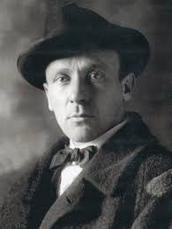

ოსტატი და მარგარიტა
ინფორმაცია წიგნზე
ავტორი: მიხეილ ბულგაკოვი
ჟანრი: მისტიკური, კლასიკა
გამოშვების თარიღი: 1967 წელი
აღწერა:
ფაუსტისა და პონტიუს პილატეს მოთხრობების თამამი გადასინჯვა, ოსტატი და მარგარიტა აღიარებულია თანამედროვე რუსული ლიტერატურის ერთ-ერთ აუცილებელ კლასიკად. რომანის ხედვა საბჭოთა ცხოვრების შესახებ 1930-იან წლებში იმდენად სასტიკად ზუსტია, რომ მისი ავტორის სიცოცხლეში გამოქვეყნება ვერ მოხერხდა და მხოლოდ 1960-იან წლებში ცენზურირებული გამოცემაში გამოჩნდა. მისი ჭეშმარიტება იმდენად გამძლეა, რომ მისი ენა გახდა საერთო რუსული მეტყველების ნაწილი.
ერთ ცხელ გაზაფხულზე, ეშმაკი ჩამოდის მოსკოვში, თანხლებით თანხლებით, რომელშიც შედის ლამაზი შიშველი ჯადოქარი და უზომოდ მოლაპარაკე შავი კატა, რომელსაც უყვარს ჭადრაკი და არაყი. მნახველები სწრაფად ანადგურებენ ქალაქს, რომელიც უარს ამბობს ღმერთისა და სატანის რწმენაზე. მაგრამ მათ ასევე მოაქვთ მშვიდობა ორ უბედურ მოსკოველს: ერთი არის ოსტატი, მწერალი, რომელიც გაბედა და დაწერა რომანი ქრისტესა და პონტიუს პილატეს შესახებ; მეორე არის მარგარიტა, რომელსაც უყვარს ოსტატი ისე ღრმად, რომ მზადაა მისთვის ჯოჯოხეთში წავიდეს. რაც მოჰყვება არის ამოუწურავი ენერგიის, იუმორისა და ფილოსოფიური სიღრმის რომანი, ნაწარმოები, რომლის ნიუანსი პირველად ვლინდება დიანა ბურგინისა და კეტრინ ტიერნან ო'კონორის ბრწყინვალე ინგლისურ ვერსიაში.
მიხეილ ბულგაკოვი დაიბადა კიევში, რუსეთის იმპერიაში (დღევანდელი უკრაინის ნაწილი) 1891 წლის 3/15 მაისს. სწავლობდა და ხანმოკლე მედიცინას ეწეოდა და რევოლუციურ რუსეთსა და კავკასიაში გაჭირვებული ხეტიალის შემდეგ 1921 წელს მოსკოვში დასახლდა. მისი სიმპათიური თეთრი გმირების ასახვა მის მოთხრობებში, პიესებში „ტურბინების დღეები“ (თეთრი გვარდია), რომელმაც დიდი წარმატება ხვდა წილად მოსკოვის სამხატვრო თეატრში 1926 წელს და „ფრენა“ (1927 წ.) და მისი სატირული დამოკიდებულება „ახლის“ ჩინოვნიკების მიმართ. ეკონომიკურმა გეგმამ გამოიწვია მზარდი კრიტიკა, რომელიც ძალადობრივი გახდა პიესის, მეწამული კუნძულის შემდეგ. მისი შემდგომი ნამუშევრები მხატვრისა და ტირანის თემას ისტორიული პერსონაჟების საფარქვეშ ეპყრობა, ისეთი პიესებით, როგორიცაა მოლიერი, დადგმული 1936 წელს, დონ კიხოტი, დადგმული 1940 წელს და პუშკინი, დადგმული 1943 წელს. მან ასევე დაწერა ბრწყინვალე ბიოგრაფია, მისი ლიტერატურული გმირის, მოლიერის სახით, ძალზე ორიგინალურია, მაგრამ „ოსტატი და მარგარიტა“, ფანტასტიკური რომანი ეშმაკისა და მისი მხლებლების შესახებ, რომელიც ვითარდება თანამედროვე მოსკოვში, ზოგადად მის შედევრად ითვლება. პოპულარობა, როგორც სახლში, ისე მის ფარგლებს გარეთ, 1940 წელს მოსკოვში მისი გარდაცვალებიდან მეოთხედი საუკუნის შემდეგ მოვიდა.
ავტორის ხელმოწერა: